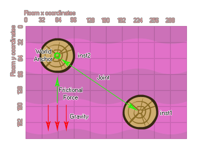

physics_joint_friction_create(inst1, inst2, anchor_x, anchor_y, max_force, max_torque, col)
| Streit | Beschreibung |
|---|---|
| inst1 | Die erste Instanz zum Verbinden mit dem Gelenk |
| inst2 | Die zweite Instanz, um sich mit dem Gelenk zu verbinden |
| anchor_x | Die x-Koordinate für das Gelenk innerhalb der Spielwelt |
| anchor_y | Die y-Koordinate für das Gelenk innerhalb der Spielwelt |
| max_force | Die maximale Reibungskraft, die angewendet wird |
| max_torque | Die maximale Rotationskraft, die angewendet wird |
| col | Ob die beiden Instanzen kollidieren können (wahr) oder nicht (falsch) |
Rückgabe: Index des Gelenks
Die Reibungsverbindung unterscheidet sich ein wenig von allen anderen Gelenken in der Physiksimulation, da die erzeugte Verbindung nicht die Position oder Bewegung der Instanzen einschränkt, sondern ihre Geschwindigkeit und Rotation. Dies geschieht, indem die maximalen Eingangswerte für Kraft und Drehmoment genommen und diese an die zweite Vorrichtung angelegt werden, um die Geschwindigkeit und den Drehimpuls auf dieselben Werte wie die der ersten Instanz zu bringen. Wenn Sie also eine stationäre Instanz und eine sich bewegende Instanz haben, verbinden Sie diese mit einer Reibungsverbindung, die sich bewegende Instanz wird dann allmählich langsamer, bis sie auch stationär ist. Wenn sich beide Instanzen bewegen, wird die Bewegungsgeschwindigkeit der zweiten Instanz so geändert, dass sie der der ersten Instanz entspricht.

Wie bei den meisten anderen Verbindungen, geben Sie die Instanzen an, die zusammengefügt werden sollen, sowie die Position für die Verbindung, die innerhalb des Raums erstellt werden soll. Sie liefern dann die maximale Kraft und das maximale Drehmoment (Richtungs- und Rotationsreibung), und wenn Sie den "col" -Wert auf stellen true dann können die beiden Instanzen interagieren und miteinander kollidieren, aber nur wenn sie Kollisionsereignisse haben, wenn sie jedoch auf gesetzt sind false sie werden nicht kollidieren, egal was passiert.
var mainFixture, o_id;
mainFixture = physics_fixture_create();
physics_fixture_set_circle_shape(mainFixture,
sprite_get_width(sprite_index) / 2);
o_id = instance_create_layer(x+300, y, "Instances",
obj_Rudder);
physics_fixture_bind(mainFixture, id);
physics_fixture_bind(mainFixture, o_id);
physics_joint_friction_create(id, o_id, x, y, 10, 0.3, true);
physics_fixture_delete(mainFixture);
Der obige Code erzeugt eine Fixture und bindet sie dann an zwei Instanzen, bevor sie beide mittels einer Reibungsverbindung verbinden.